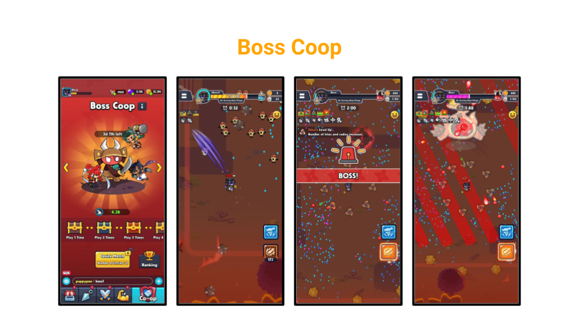

The gameplay of the main chapters went through a renewal.
The original format aimed for players to survive waves of incoming monsters within a time limit.
However, this approach led to repetitive and monotonous experiences. Players could clear chapters without killing the monsters, even with lower stats, thus reducing the challenge of higher difficulty chapters.
To address this,
1. I restructured the chapters to require players to achieve a specific monster kill count to clear a chapter. This provided a challenging hurdle and a reason for growth for players who were not sufficiently equipped.
2. I introduced a "Special Move" feature, which charges as players kill monsters. This feature allows players to eliminate large groups of monsters at once, enhancing the hack-and-slash experience.
This content allows up to four players to collaborate and inflict as much damage as possible on a weekly boss.
To strengthen the multiplayer identity, the design increased playtime based on the damage dealt to the boss.
However, this led to issues where players sought only the strongest party members, and the extended playtime made the game tedious, coupled with the overwhelming rewards, necessitating multiple nerfs.
To resolve these issues, we planned to group players based on their damage output from the previous week, forming parties of similar skill levels. This approach aimed to reduce the stress of finding strong party members and ensure balanced boss battles across different groups. This plan was handed over to another designer before my departure.